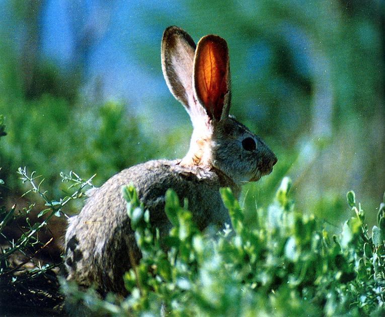

Lepus in China
✻
Lepus capensis
草兔
体背面毛色有变异，一般呈土黄色或黄褐色，通常带有黑色波纹；也有的背毛呈肉桂色、浅驼色或灰驼色；体侧面近腹处为棕黄色；臀部通常较背部为淡；耳尖外侧黑色；尾上面中间黑色，其两侧及下面为纯白色；颈部浅土黄色；喉部呈暗土黄色或淡肉桂色；体腹面除喉部外均为纯白色；足背面土黄色。
Lepus comus
云南兔
体背面毛暗赭灰色；腰臀部毛尖黑色，呈现黑色斑纹；臀部隐约有1灰色臀斑；头顶通常有1白色小斑；耳背面暗褐色，耳缘灰白色，耳尖黑色。体腹面除喉部为赭黄色外，余均为白色；体侧面和前后肢前侧为鲜赭黄色；尾上面黑褐色，下面灰白色。
Lepus hainanus
海南兔
体背面毛为黑和浅黄褐混合色；颈项淡棕黄色；耳前部黄褐色，其上半部较暗，前缘鲜棕黄色，且毛较长；耳背面基部浅黄带白色，端部暗褐近黑色；耳后缘毛短，色比前缘浅淡；眼先和眼周白色；尾上面黑色，边缘白色；颏、喉、腹及尾下面均为纯白色。冬毛比夏毛更为鲜明，冬季休侧无长的白毛。
Lepus mandshuricusdong
东北兔
体背面毛为黑和浅黄褐混合色；颈项淡棕黄色；耳前部黄褐色，其上半部较暗，前缘鲜棕黄色，且毛较长；耳背面基部浅黄带白色，端部暗褐近黑色；耳后缘毛短，色比前缘浅淡；眼先和眼周白色；尾上面黑色，边缘白色；颏、喉、腹及尾下面均为纯白色。冬毛比夏毛更为鲜明，冬季休侧无长的白毛。
Lepus oiostolus
高原兔
体背面毛一般为浅棕黑色；头部、额部及眼间部毛色较深，呈棕黑色，毛基灰黑色；耳尖黑色；颈背面有1明显的浅棕色区；颊及体侧面较体背面略淡；下颏与胸腹中央白色，毛基浅灰色；尾上面黑灰色，下面污白色。夏毛色较深，体背面、头部、体侧面及两耳均呈深褐 黑色。

Lepus sinensis
华南兔
毛衣粗；体背面棕上黄色，杂以黑色，体侧面较浅，从颈项至耳基棕黄色，头与体背面毛色相似；耳前缘淡棕黄色，耳背面前半部较头部深暗，后半部与颈部相同，耳端黑褐色；尾上面毛色与体背面相同，下面浅棕黄色；体腹面鲜淡棕黄色或胸和腹中央白而略带浅土黄色；前肢毛色似颈部，后足背较前肢浅淡，足底灰黄褐色；除大腿内侧一部分毛基为白色外，全身其他部分毛基均为灰色，只是深浅不同而已。
Lepus timidus
雪兔
夏毛：体背面赤褐色、暗褐色、灰色、灰褐色或黄褐带赭色等；耳壳外侧边缘白色。冬毛：白色，仅耳尖和眼眶黑色。

Lepus yarkandensis
塔里木兔
夏季体背面沙褐色，杂以许多灰黑色细斑；体侧面毛色渐淡，呈沙黄色，黑斑亦逐渐消失；体腹面全白，但颈下面有沙黄色横带；头顶部毛色同体背面。冬季毛色甚浅，体背面从头至尾上面中央均为浅沙棕色；眼至耳前方黄白色；喉及腹部白色，其余部分与夏毛相同。